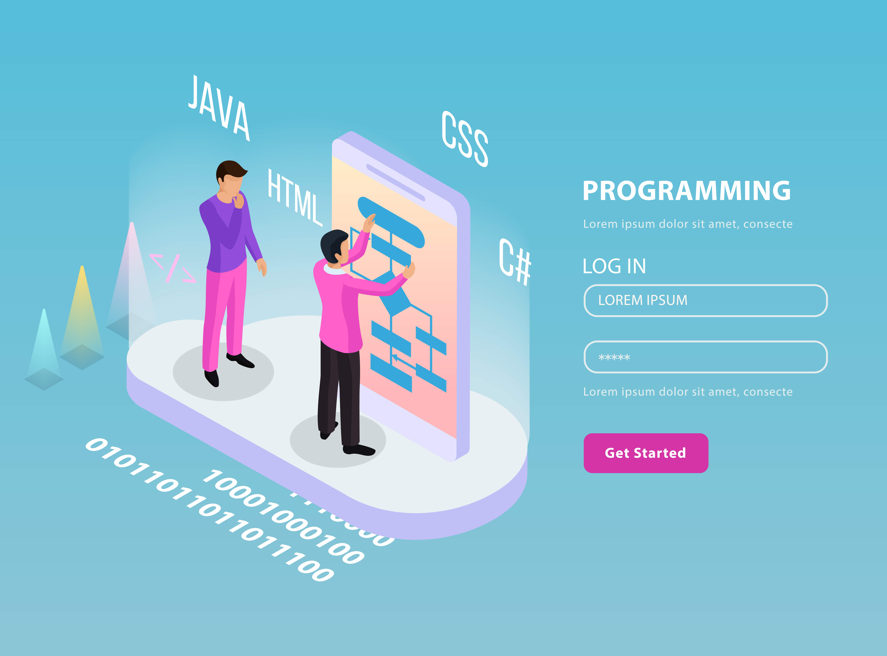

Media Queries são uma nova técnica introduzida no CSS3 que altera a apresentação do conteúdo
baseando-se nas diferentes dimensões da janela de exibição (viewport). A janela de exibição é a área
de uma página web visível para o usuário, e é diferente dependendo do dispositivo utilizado para
acessar o site.
Media Queries consistem em um media type. Se esse media type corresponder ao tipo de dispositivo no
qual o documento é exibido, os estilos são aplicados. Você pode ter quantos seletores e estilos
quiser dentro de sua media query.
Aqui está um exemplo de media query que retorna o conteúdo quando a largura do dispositivo é menor
ou igual a 100px:
@media (max-width: 100px) { /* CSS Rules */ }
e a media query a seguir retorna o conteúdo quando a altura do dispositivo é maior ou igual a 350px:
@media (min-height: 350px) { /* CSS Rules */ }
Tornar uma imagem responsiva
Tornar imagens responsivas com CSS é muito simples. Você só precisa adicionar essas propriedades a
uma imagem:
img {
max-width: 100%;
height: auto;
}
A propriedade max-width de valor 100% garantirá que a imagem nunca seja mais larga do que o
contêiner em que está inserida. A propriedade height de valor auto, por sua vez, fará com que a
imagem mantenha sua proporção original.

Usar imagem retina para telas de resolução mais alta!
Com o aumento dos dispositivos conectados à Internet, seus tamanhos e especificações variam
bastante. As telas que esses dispositivos usam podem ser diferentes externa e internamente. A
densidade de pixels é um aspecto que pode ser diferente de um dispositivo para outro e essa
densidade é conhecida como Pixel Por Polegada (PPI) ou pontos por polegada (DPI). A tela mais famosa
é aquela conhecida como "Tela Retina" nos notebooks Apple MacBook Pro mais recentes e, nos últimos
tempos, em computadores iMac. Devido à diferença na densidade de pixels entre uma tela "Retina" e
"não Retina", algumas imagens que não foram feitas com uma tela de alta resolução em mente podem
parecer "pixeladas" quando renderizadas em uma tela de alta resolução.
A maneira mais simples de fazer com que suas imagens apareçam de maneira adequada em telas de alta
resolução, como a "tela retina" do MacBook Pro, é definir os valores de largura (width) e altura
(height) da imagem para a metade do arquivo original. Aqui vemos um exemplo de imagem que usa apenas
metade da altura e largura originais:
img {
height: 100px;
width: 100px;
}
Exemplo de figura em modo retina
Tipografia responsiva
Em vez de usar em ou px para dimensionar o texto, você pode usar unidades relativas à viewport para
ter uma tipografia responsiva. As unidades de viewport, como as porcentagens, são unidades
relativas, mas são baseadas em itens diferentes. As unidades de viewport são relativas às dimensões
da viewport (largura ou altura) de um dispositivo e as porcentagens são relativas ao tamanho do
elemento pai.
As quatro unidades de viewport são:
vw (largura da viewport): 10vw seria 10% da largura da viewport.
vh (altura da viewport): 3vh seria 3% da altura da viewport.
vmin (mínimo da viewport): 70vmin seria 70% da menor dimensão da viewport (altura ou
largura).
vmax (máximo da viewport): 100vmax seria 100% da maior dimensão da viewport (altura ou
largura).
Usar display: flex para posicionar duas caixas
Esta seção utiliza estilos de desafio alternados para mostrar como usar o CSS para posicionar
elementos de maneira flexível. Primeiro, o desafio explicará a teoria. Em seguida, aplicaremos o
conceito aprendido em um desafio prático usando um tweet simples.
Colocando a propriedade display: flex; em um elemento permite que você use outras propriedades flex
para construir uma página responsiva.
BOX 1
BOX 2
Adicionando Flex Box aos elementos
Para uso do recurso Flex Box, adicione a tag pai a propriedade: display:
flex;.
Às vezes, os flex items dentro de um flex container não preenchem todo o espaço no disponível no
contêiner. É comum querer dizer ao CSS como alinhar e espaçar os flex items de uma certa
maneira. Felizmente, a propriedade justify-content tem várias opções para fazer isso. Antes, no
entanto, há uma terminologia importante para entender antes de aprender essas opções.
Existem várias opções para espaçar os flex items ao longo da linha que for o eixo principal. Uma
dos mais usadas é justify-content: center;, que alinha todos os flex items ao centro dentro do
flex container. As demais opções são:
flex-start: alinha os itens no início do contêiner. Para
linhas, os flex items são
empurrados para a esquerda do flex container. Para colunas, os flex items são empurrados
para o topo do flex container. Este é o alinhamento padrão se nenhum valor for especificado
para justify-content.
flex-end: alinha itens no final do contêiner. Para linhas, os
flex items são empurrados para
a direita do flex container. Para colunas, os flex items são empurrados para a parte
inferior do flex container.
space-between: alinha os itens ao centro do eixo principal,
com um espaçamento entre os
itens. O primeiro item e o último são empurrados até a borda do flex container. Por exemplo,
quando a direção do flex container for em linha, o primeiro item fica do lado esquerdo do
contêiner e o último item fica no lado direito do contêiner. Então, o espaço restante é
distribuído igualmente para os demais itens.
space-around: similar ao space-between mas os primeiros e
últimos itens não ficam grudados
nas bordas do flex container, o espaço é distribuído em torno de todos os itens com metade
do espaço em cada extremidade do flex container.
space-evenly: distribui o espaço igualmente entre os flex
items com um espaço completo em
cada extremidade do flex container.
Rafael Dantas
@Programador89
Graduado em Analise e desenvolvimento de sistemas pela Universidade Abeu de Ensinos.
Tenho
experiência em construção de sites com WordPress, suporte ao usuário, treinamento e
levantamento de requisitos para correção bugs.
Conhecimento em ERP: Protheus (TOTVS)
Módulos:
Controle de Lojas
Financeiro
Compras
Estoque
Faturamento
Aprimorando meus conhecimentos em C#, HTML5, CSS3 e WordPress.
GitHub
Programador89
Rafael Dantas
@Programador89
Graduado em Analise e desenvolvimento de sistemas pela Universidade Abeu de Ensinos.
Tenho
experiência em construção de sites com WordPress, suporte ao usuário, treinamento e
levantamento de requisitos para correção bugs.
Conhecimento em ERP: Protheus (TOTVS)
Módulos:
Controle de Lojas
Financeiro
Compras
Estoque
Faturamento
Aprimorando meus conhecimentos em C#, HTML5, CSS3 e WordPress.
GitHub
Programador89
Rafael Dantas
@Programador89
Graduado em Analise e desenvolvimento de sistemas pela Universidade Abeu de Ensinos.
Tenho
experiência em construção de sites com WordPress, suporte ao usuário, treinamento e
levantamento de requisitos para correção bugs.
Conhecimento em ERP: Protheus (TOTVS)
Módulos:
Controle de Lojas
Financeiro
Compras
Estoque
Faturamento
Aprimorando meus conhecimentos em C#, HTML5, CSS3 e WordPress.
GitHub
Programador89
Alinhar elementos usando Align-items
A propriedade align-items é similar à justify-content. Lembre que a propriedade justify-content
alinhou os flex items ao longo do eixo principal. Para linhas, o eixo principal é uma linha
horizontal e para colunas é uma linha vertical.
Flex containers também têm um eixo transversal que é o oposto do eixo principal. Para linhas, o eixo
transversal é vertical, e para colunas, o eixo transversal é horizontal.
O CSS oferece a propriedade align-items para alinhar os flex items ao longo do eixo transversal.
Para linhas, ela indica ao CSS como empurrar os itens para cima ou para baixo dentro do container. E
para uma coluna, como empurrar todos os itens para a esquerda ou direita dentro do container.
Os valores disponíveis para align-items são:
flex-start: alinha os itens no início do container. Para linhas, os
flex items são posicionados no topo do container. Para colunas, os flex items são
posicionados à esquerda do container.
flex-end: alinha os itens no final do container. Para linhas, todos os
flex items são posicionados na parte inferior do container. Para colunas, os flex items
são posicionados à direita do container.
center: alinha os itens ao centro. Para linhas, os flex items são
posicionados verticalmente (com espaços iguais acima e abaixo dos itens). Para colunas,
os flex items são posicionados horizontalmente (com espaços iguais à esquerda e à
direita dos itens).
stretch: estica os itens para preencher o container. Por exemplo, itens
posicionados em linhas são esticados para preencher o contêiner de cima a baixo. Este é
o valor padrão se nenhum valor for especificado para a propriedade
align-items.
baseline: o posicionamento é realizado com base no texto dentro de cada
flex item. A linha de base (baseline) é um conceito de textos. Pense nela como se fosse
a linha em que as letras ficam apoiadas.
Flex-wrap para quebrar linhas ou colunas
O CSS flexbox possui uma propriedade que permite dividir um contêiner flex em várias linhas (ou colunas). Por padrão, um flex container manterá todos os flex items juntos. Por exemplo, todos os flex items estarão lado a lado na mesma linha.
No entanto, ao usar a propriedade flex-wrap, informamos ao CSS para quebrar essa linha. Isso significa que os itens adicionais serão movidos para uma nova linha ou coluna. O ponto onde essa quebra acontece depende do tamanho dos itens e do tamanho do flex conteiner.
O CSS oferece as seguintes opções para a direção da quebra de linha:
nowrap: esta é a configuração padrão e não cria novas linhas ou colunas.
wrap: cria novas linhas de cima para baixo se os itens estiverem dispostos em linhas e da esquerda para a direita se estiverem em colunas.
wrap-reverse: cria novas linhas de baixo para cima se os itens estiverem dispostos em linhas e da direita para a esquerda se estiverem em colunas.
Exemplo de flex-wrap: wrap
Estilo padrão do navegador, quando o conteúdo não pode ser contido no interior da tag pai, ele quebra linha.
Exemplo de flex-wrap: nowrap
Este estilo comprime todos os elementos de modo que estes caibam dentro da linha do container pai.
Exemplo de flex-wrap: wrap-reverse
Este estilo é o inverso do elemento wrap, comaçando pela parte inferior e terminando a superior.
Encolhendo itens com flex-shrink
Até aqui, todas as propriedades nos desafios se aplicam ao flex container (o pai dos flex items). Porém, há várias propriedades úteis para os flex items.
A primeira é a propriedade flex-shrink. Quando é usada, permite que um item encolha se o flex container for muito pequeno. Os itens encolhem quando a largura do contêiner pai é menor do que a soma das larguras de todos os flex items dentro dele.
A propriedade flex-shrink recebe números como valor. Quanto maior o número, mais encolherá comparado a outros itens no contêiner. Por exemplo, se um item tem flex-shrink de valor 1 e o outro tem flex-shrink de valor 3, aquele com valor 3 vai encolher três vezes mais do que o outro.